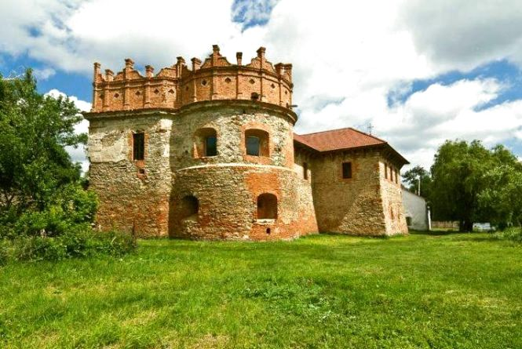
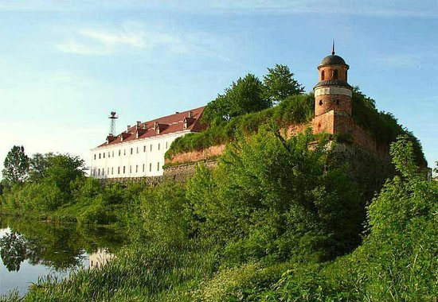

|  |
Замок Острозьких у місті Острог на Рівненщині є однією з найбільш визначних пам'яток історії та культури України. Замок побудований у XIV столітті і на протязі віків перебував у володінні різних відомих родин. У різні часи замок був резиденцією військових діячів, князів та магнатів, тут зберігалася цінна бібліотека та мистецькі скарби. Замок був також центром культурного життя та науки, де працювали видатні діячі української культури, зокрема поет Тарас Шевченко. Сьогодні замок Острозьких є музейним комплексом, де можна побачити експозиції про історію замку та його власників, а також відвідати виставки сучасного мистецтва та інші культурні заходи. Також на території замку є каплиця, кафе та магазин сувенірів. |
|  |
Чорнівецький замок - історична споруда, яка розташована на території села Чорнівці Рівненської області в Україні. Замок був побудований у XIV столітті на місці давнього городища. Через своє стратегічне розташування на кордоні між Галичиною та Волинню, замок був важливим об'єктом оборони. Чорнівецький замок складався з двох частин: верхньої і нижньої. Верхню частину замку займав головний палац, круглі вежі та оборонні стіни. Нижня частина замку включала в себе приміщення для солдат та підвали, де зберігалися запаси їжі та зброї. На жаль, внаслідок численних війн та пожеж, замок був частково зруйнований. Зараз з замку збереглися тільки руїни стін та веж, але незважаючи на це, він продовжує привертати увагу туристів. У сучасний час на території замку проводяться різноманітні культурно-мистецькі заходи, які приваблюють багато відвідувачів. Також у замку діє музей-заповідник "Чорнівецький замок", де можна побачити експозиції з історії та культури Полісся та Волині. |